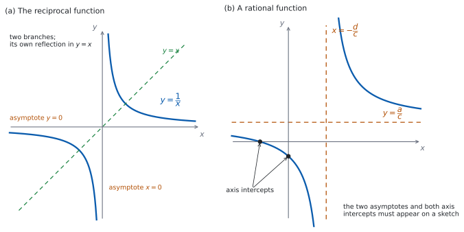
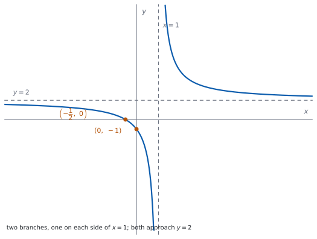

SL 2.8 — The reciprocal function and rational functions（逆数関数と分数関数）
- reciprocal function（逆数関数）\(f(x) = \dfrac{1}{x}\) のグラフがかける。
- \(\dfrac{1}{x}\) が自分自身の逆関数（self-inverse）だと分かる。
- \(f(x) = \dfrac{ax+b}{cx+d}\) の vertical asymptote（垂直漸近線）と horizontal asymptote（水平漸近線）を求められる。
- 軸との交点を求められる。
- domain と range を、漸近線から書ける。
sketchで、漸近線と交点をすべてかき入れられる。
The idea
1. 逆数関数 \(f(x) = \dfrac{1}{x}\)
\[ f(x) = \frac{1}{x}, \qquad x \neq 0 \tag{1}\]
\(x = 0\) では \(\dfrac{1}{0}\) が定義されないので、\(0\) だけが domain から抜けます（SL 2.2）。
グラフは 図 1 の (a) です。枝が \(2\) つあり、\(1\) 本の曲線ではありません。
- \(x\) が \(0\) に近づくと、\(\dfrac{1}{x}\) の絶対値はいくらでも大きくなります。→ \(x = 0\) が垂直漸近線。
- \(x\) の絶対値が大きくなると、\(\dfrac{1}{x}\) は \(0\) に近づきます。ただし \(0\) にはなりません（分子が \(1\) なので）。→ \(y = 0\) が水平漸近線。
したがって domain は \(x \neq 0\)、range も \(y \neq 0\) です。
漸近線はかき入れる補助線です。sketch では点線でかき、式（\(x = 0\) など）を書き添えます。
このページで扱う \(\dfrac{1}{x}\) と \(\dfrac{ax+b}{cx+d}\) では、グラフが漸近線に触れることはありません。 触れているようにかくと、ちがうグラフを表すことになります。
「触れない」のは、この \(2\) つの形についての話です。垂直漸近線は、どんな関数でも横切れません（そこで値が定義されないからです）。いっぽう水平漸近線は、ほかの形の関数ならグラフが横切ることもあります。
2. \(\dfrac{1}{x}\) は自分自身が逆関数
\(f(x) = \dfrac{1}{x}\) の逆関数を求めてみます（SL 2.5）。\(y = \dfrac{1}{x}\) を \(x\) について解くと
\[ xy = 1 \ \Rightarrow \ x = \frac{1}{y} \]
なので、\(f^{-1}(x) = \dfrac{1}{x} = f(x)\) です。自分自身が逆関数になっています。これを self-inverse といいます。
逆関数のグラフは \(y = x\) について折り返したものでした。self-inverse なら、折り返しても同じ形ということです。図 1 の (a) の点線が、その対称の線です。
\(f(f(x)) = x\) という式でも確かめられます（例題 1 の (b) でやってみてください）。
3. 分数関数 \(f(x) = \dfrac{ax+b}{cx+d}\)
\[ f(x) = \frac{ax+b}{cx+d} \tag{2}\]
\(1\) 次式を \(1\) 次式で割った形です。\(c \neq 0\)、かつ \(ad \neq bc\) とします。\(c = 0\) なら分数ではなく \(1\) 次関数（\(a = 0\) なら定数関数）ですし、\(ad = bc\) なら約分できてしまいます。たとえば \(\dfrac{2x+4}{x+2} = 2\)（ただし \(x \neq -2\)）で、これは漸近線を \(2\) 本もつグラフではなく、\(x = -2\) のところに穴の空いた水平な直線です。以下の話は、この \(2\) つを除いた場合のものです。
このページでは、走る例として
\[ f(x) = \frac{x+5}{x-2} \]
を使います。\(a = 1\)、\(b = 5\)、\(c = 1\)、\(d = -2\) です。
4. \(2\) 本の漸近線
垂直漸近線は、分母が \(0\) になる \(x\) です。
\[ cx + d = 0 \ \Rightarrow \ x = -\frac{d}{c} \tag{3}\]
水平漸近線は、\(x\) の係数どうしの比です。
\[ y = \frac{a}{c} \tag{4}\]
走る例では、\(x - 2 = 0\) から垂直漸近線 \(x = 2\)、\(\dfrac{1}{1}\) から水平漸近線 \(y = 1\) です。
\(y = \dfrac{1}{x}\) の水平漸近線が \(y = 0\) なので、つい \(y = 0\) と書いてしまいがちです。分子にも \(x\) があるときは、\(y = \dfrac{a}{c}\) です。
\(\dfrac{a}{c}\) は、\(x\) の係数どうしの比です。定数項 \(b\)、\(d\) は関係ありません。
5. 軸との交点
ふつうの関数と同じです（SL 2.4）。
- \(y\) 切片（\(y\)-intercept）：\(x = 0\) を入れます。\(f(0) = \dfrac{b}{d}\)。
- \(x\) 切片（\(x\)-intercept）：\(y = 0\) とおきます。分数が \(0\) になるのは分子が \(0\) のときなので、\(ax + b = 0\)、つまり \(x = -\dfrac{b}{a}\)（\(a \neq 0\) のとき）。
切片がない場合もあります。 分子に \(x\) がない（\(a = 0\)）とき、たとえば \(f(x) = \dfrac{3}{x+1}\) では \(3 = 0\) が解けないので、\(x\) 切片はありません。同じように \(d = 0\)、つまり垂直漸近線が \(x = 0\) のときは、\(x = 0\) が domain の外なので \(y\) 切片がありません。第 7 節で引くシラバスが any intercepts と書いているのは、このためです。
走る例 \(f(x) = \dfrac{x+5}{x-2}\) では、\(f(0) = \dfrac{5}{-2} = -\dfrac{5}{2}\) で \(y\) 切片は \(\left(0, -\dfrac{5}{2}\right)\)、\(x+5 = 0\) から \(x\) 切片は \((-5, 0)\) です。
分母を \(0\) とおいてはいけません。分母が \(0\) の \(x\) は、そもそも domain に入っていません。
分子 \(= 0\) と書いてから解いてください。
6. domain と range
domain は、分母が \(0\) になる \(x\)（＝垂直漸近線の \(x\)）を除いた実数全体です。
\[ x \neq -\frac{d}{c} \]
range は、水平漸近線を除いた実数全体です。
\[ y \neq \frac{a}{c} \]
走る例では domain が \(x \neq 2\)、range が \(y \neq 1\) です。
Find the range の答えは、\(y \in \mathbb{R}\) ではありません。水平漸近線の値だけが抜けます。
答案には \(y \neq \dfrac{a}{c}\)、または \(y \in \mathbb{R}, \ y \neq \dfrac{a}{c}\) と書きます。
7. sketch のかき方
シラバスは、答案について次のように求めています。
Sketches should include all horizontal and vertical asymptotes and any intercepts with the axes.
つまり、漸近線 \(2\) 本と、軸との交点をすべてかき入れます。手順にすると、
- 垂直漸近線を点線でかき、式を書く。
- 水平漸近線を点線でかき、式を書く。
- \(y\) 切片と \(x\) 切片を求めて、点を打ち、座標を書く。
- \(2\) つの枝を、漸近線に近づけながらかく。
図 1 の (b) が、そのようすです。

TI-Nspire の Graphs 画面に \(f(x)\) を入れると、グラフが出ます。垂直漸近線のところに、縦の線が引かれてしまうことがあります。 画面が点をつないで描くための見かけの線で、グラフの一部ではありません。消す設定を探さないでください。 その線は無いものとして読み、漸近線は自分で点線をかき足します。
水平漸近線は、\(x\) を大きくした表の値で見当がつきます。 Table 画面で \(x = 100\)、\(x = 1000\) と入れて、\(y\) が近づく値を読みます。
Paper 1 では使えません。 このページの例題と演習は、すべて手で解ける形にしてあります。
Why it works
なぜ、分母が \(0\) の \(x\) で垂直漸近線になるのでしょうか。
\(x\) が \(-\dfrac{d}{c}\) に近づくとき、分母 \(cx+d\) は \(0\) に近づきます。一方、分子 \(ax+b\) はそこで
\[ a\left(-\frac{d}{c}\right) + b = \frac{bc - ad}{c} \]
という値になります。これが \(0\) でなければ、「\(0\) でない数」÷「\(0\) に近づく数」なので、\(\lvert f(x) \rvert\) はいくらでも大きくなります。だから漸近線になります。
なぜ、水平漸近線が \(y = \dfrac{a}{c}\) なのでしょうか。 式を次のように書きかえます。
\[ \frac{ax+b}{cx+d} = \frac{a}{c} + \frac{bc-ad}{c(cx+d)} \tag{5}\]
右辺を通分すると、分子が \(a(cx+d) + bc - ad = acx + bc = c(ax+b)\) になり、たしかにもとの式に戻ります。
この形で見ると、\(x\) の絶対値が大きいとき \(\dfrac{bc-ad}{c(cx+d)}\) は \(0\) に近づくので、\(f(x)\) は \(\dfrac{a}{c}\) に近づきます。
そして、\(f(x) = \dfrac{a}{c}\) にはなりません。 そうなるには \(\dfrac{bc-ad}{c(cx+d)} = 0\) が要りますが、\(bc - ad \neq 0\) ならこの分数は \(0\) になれないからです。だから \(\dfrac{a}{c}\) だけが range から抜けます。
式 5 は、分数関数が \(y = \dfrac{1}{x}\) を平行移動・拡大したものだということも示しています（この見方は SL 2.11 で扱います）。走る例なら
\[ \frac{x+5}{x-2} = 1 + \frac{7}{x-2} \]
で、\(y = \dfrac{1}{x}\) を縦に \(7\) 倍してから、右に \(2\)、上に \(1\) 動かした形です（順序を入れかえると別のグラフになります）。
なぜ、\(\dfrac{1}{x}\) は self-inverse なのでしょうか。 逆関数は「\(x\) と \(y\) を入れかえて解き直す」ものでした（SL 2.5）。\(xy = 1\) という式は、\(x\) と \(y\) を入れかえても同じ式です。だから解き直しても同じ関数が出てきます。
Worked examples
問題文は英語です。意味が理解できなかったら、問題文の下の「日本語訳」を開いてください。解説は日本語です。
例題も演習も、すべて電卓なしで解けます。 Paper 1 のつもりで解いてください。
例題 1 Let \(f(x) = \dfrac{1}{x}\), for \(x \neq 0\).
(a) Write down the equations of the two asymptotes of the graph of \(f\).
(b) Show that \(f(f(x)) = x\) for all \(x \neq 0\).
(c) Write down the range of \(f\).
(d) Explain what part (b) tells you about \(f^{-1}\).
日本語訳
\(x \neq 0\) について \(f(x) = \dfrac{1}{x}\) とします。
(a) \(f\) のグラフの \(2\) 本の漸近線の式を書きなさい。
(b) \(x \neq 0\) のすべてで \(f(f(x)) = x\) であることを示しなさい。
(c) \(f\) の range を書きなさい。
(d) (b) が \(f^{-1}\) について何を示しているかを説明しなさい。
(a) 分母が \(0\) になるのは \(x = 0\)、分子が \(1\) で \(0\) にならないので \(y = 0\) です（第 1 節）。
\[ x = 0 \quad \text{and} \quad y = 0 \]
(b) Show that なので、代入の過程を書いて見せます。
\[ f(f(x)) = f\!\left(\frac{1}{x}\right) = \frac{1}{\left(\dfrac{1}{x}\right)} = x \]
(c) 水平漸近線の値だけが抜けます（第 6 節）。
\[ y \neq 0 \]
(d) Explain なので、英語で書きます。
試験ではこう書く
Part (b) shows that applying \(f\) twice returns the original value, so \(f\) undoes itself. That is exactly what the inverse function does, so \(f^{-1}(x) = \dfrac{1}{x} = f(x)\): the function is self-inverse. Its graph is therefore unchanged by reflection in the line \(y = x\).
（(b) は、\(f\) を \(2\) 回はたらかせるともとの値に戻ることを示している。それはまさに逆関数のはたらきなので、\(f^{-1}(x) = \dfrac{1}{x} = f(x)\)、つまりこの関数は self-inverse である。したがってそのグラフは、\(y = x\) について折り返しても変わらない、という意味です。）
検算（(a) について）。 数を入れて、近づき方を見ます。 \(x = 0.01\) では \(f(x) = 100\)、\(x = -0.01\) では \(-100\) です ✓ \(0\) の両側で大きく離れています。\(x = 100\) では \(f(x) = 0.01\)、\(x = -100\) では \(-0.01\) です ✓ どちらも \(0\) に近づいています。
検算（(b) について）。 具体的な数でも確かめます。 \(x = 4\) なら \(f(4) = \dfrac{1}{4}\)、\(f\!\left(\dfrac{1}{4}\right) = 4\) ✓ もとに戻りました。
検算（(c) について）。 \(y = 0\) になる \(x\) があるかを見ます。 \(\dfrac{1}{x} = 0\) とすると \(1 = 0\) になり、成り立ちません ✓ だから \(0\) は range に入りません。
(a) \[x = 0, \qquad y = 0\]
(b) \[f(f(x)) = f\!\left(\frac{1}{x}\right) = \frac{1}{\left(\frac{1}{x}\right)} = x\]
(c) \[y \neq 0\]
(d) \(f\) undoes itself, so \(f^{-1} = f\); the function is self-inverse.
例題 2 Let \(f(x) = \dfrac{2x+1}{x-3}\), for \(x \neq 3\).
(a) Write down the equation of the vertical asymptote of the graph of \(f\).
(b) Find the equation of the horizontal asymptote of the graph of \(f\).
(c) Find the coordinates of the points where the graph of \(f\) meets the axes.
(d) A student draws the graph as a single smooth curve passing through both of these points. Comment on this sketch.
日本語訳
\(x \neq 3\) について \(f(x) = \dfrac{2x+1}{x-3}\) とします。
(a) \(f\) のグラフの垂直漸近線の式を書きなさい。
(b) \(f\) のグラフの水平漸近線の式を求めなさい。
(c) \(f\) のグラフが軸と出会う点の座標を求めなさい。
(d) ある生徒が、その \(2\) 点を通る \(1\) 本のなめらかな曲線としてグラフをかきました。このかき方について述べなさい。
(a) 分母を \(0\) にする \(x\) です（式 3）。
\[ x - 3 = 0 \ \Rightarrow \ x = 3 \]
(b) \(x\) の係数どうしの比です（式 4）。\(a = 2\)、\(c = 1\) なので
\[ y = \frac{2}{1} = 2 \]
(c) \(y\) 切片は \(x = 0\) を入れて、\(x\) 切片は分子を \(0\) とおいて求めます（第 5 節）。
\[ f(0) = \frac{1}{-3} = -\frac{1}{3} \ \Rightarrow \ \left(0, \ -\frac{1}{3}\right) \]
\[ 2x + 1 = 0 \ \Rightarrow \ x = -\frac{1}{2} \ \Rightarrow \ \left(-\frac{1}{2}, \ 0\right) \]
(d) Comment on なので、英語で判断とその理由を書きます。
試験ではこう書く
The sketch is not correct. The graph has a vertical asymptote at \(x = 3\), so it consists of two separate branches, one on each side of that line, and no curve joins them. Both intercepts from part (c) have \(x < 3\), so they lie on the same branch. The sketch also omits the asymptotes \(x = 3\) and \(y = 2\), which a sketch must show.
（このかき方は正しくない。グラフは \(x = 3\) に垂直漸近線をもつので、その線の両側に \(1\) つずつ、離れた \(2\) つの枝からできており、それらをつなぐ曲線はない。(c) で求めた交点はどちらも \(x < 3\) なので、同じ枝の上にある。\(1\) 本のつながった曲線としてかいている点と、漸近線 \(x = 3\) と \(y = 2\) をかいていない点が誤りである、という意味です。）
検算（(a) について）。 漸近線の近くで、値を見ます。 \(x = 3.1\) では \(\dfrac{7.2}{0.1} = 72\)、\(x = 2.9\) では \(\dfrac{6.8}{-0.1} = -68\) です ✓ 両側で大きく離れています。
検算（(b) について）。 \(x\) を大きくして、近づく先を見ます。 \(x = 103\) なら \(\dfrac{207}{100} = 2.07\)、\(x = 1003\) なら \(\dfrac{2007}{1000} = 2.007\) です ✓ \(2\) に近づいています。
検算（(c) について）。 \(y\) 切片は、分けた形から出し直します。 \(\dfrac{2x+1}{x-3} = 2 + \dfrac{7}{x-3}\) です（\(2(x-3)+7 = 2x+1\) ✓）。\(x = 0\) を入れると \(2 - \dfrac{7}{3} = -\dfrac{1}{3}\) ✓ ちがう道すじで、同じ値が出ました。 \(x\) 切片のほうは、もとの式に入れ直します。\(f\!\left(-\dfrac{1}{2}\right) = \dfrac{-1+1}{-\frac{1}{2}-3} = \dfrac{0}{-\frac{7}{2}} = 0\) ✓ 分母は \(0\) ではないので、domain の中の点です。
(a) \[x = 3\]
(b) \[y = 2\]
(c) \(f(0) = -\dfrac{1}{3}\), and \(2x+1 = 0\) gives \(x = -\dfrac{1}{2}\) \[\left(0, \ -\frac{1}{3}\right) \quad \text{and} \quad \left(-\frac{1}{2}, \ 0\right)\]
(d) Not correct: the asymptote \(x = 3\) splits the graph into two branches, so it cannot be one connected curve, and the asymptotes are missing.
例題 3 Let \(f(x) = \dfrac{3x-6}{x+2}\).
(a) Write down the domain of \(f\).
(b) Write down the range of \(f\).
(c) Find \(f^{-1}(x)\), and state its domain.
(d) The domain of \(f^{-1}\) is the range of \(f\). Justify this statement.
日本語訳
\(f(x) = \dfrac{3x-6}{x+2}\) とします。
(a) \(f\) の domain を書きなさい。
(b) \(f\) の range を書きなさい。
(c) \(f^{-1}(x)\) を求め、その domain を述べなさい。
(d) 「\(f^{-1}\) の domain は \(f\) の range である」。この主張の理由を述べなさい。
(a) 分母が \(0\) になる \(x\) を外します（第 6 節）。
\[ x \neq -2 \]
(b) 水平漸近線は \(\dfrac{3}{1} = 3\) です。
\[ y \neq 3 \]
(c) \(y = \dfrac{3x-6}{x+2}\) を \(x\) について解きます（SL 2.5）。分母をはらってから、\(x\) を集めます。
\[ y(x+2) = 3x - 6 \ \Rightarrow \ xy + 2y = 3x - 6 \]
\[ xy - 3x = -6 - 2y \ \Rightarrow \ x(y-3) = -(2y+6) \]
\[ x = \frac{-(2y+6)}{y-3} \]
\(x\) と \(y\) を書きかえて
\[ f^{-1}(x) = \frac{-(2x+6)}{x-3}, \qquad x \neq 3 \]
(d) Justify なので、英語で理由を書きます。
試験ではこう書く
The inverse function sends each output of \(f\) back to the input it came from, so the numbers it can be applied to are exactly the numbers \(f\) actually produces. That set is the range of \(f\). Here the range of \(f\) is \(y \neq 3\), and the expression for \(f^{-1}\) is undefined only at \(x = 3\), so its domain is \(x \neq 3\), which agrees.
（逆関数は、\(f\) の出力をもとの入力へ戻すはたらきをするので、それを当てはめられる数はちょうど \(f\) が実際に出す数である。その集まりが \(f\) の range である。ここでは \(f\) の range が \(y \neq 3\) であり、\(f^{-1}\) の式は \(x = 3\) でだけ定義されないので、その domain は \(x \neq 3\) となって一致する、という意味です。）
検算（(c) について）。 合成して、もとに戻るかを見ます。 \(x = 4\) なら \(f(4) = \dfrac{12-6}{6} = 1\) です。これを \(f^{-1}\) に入れると
\[ f^{-1}(1) = \frac{-(2+6)}{1-3} = \frac{-8}{-2} = 4 \]
✓ もとの \(4\) に戻りました。
検算（(b) について）。 \(f(x) = 3\) になる \(x\) があるかを見ます。 \(3x - 6 = 3(x+2) = 3x+6\) とすると \(-6 = 6\) で、成り立ちません ✓ だから \(3\) は range に入りません。
検算（(a)(c) について）。 漸近線が入れかわっているかを見ます。 \(f\) は垂直 \(x = -2\)、水平 \(y = 3\)。\(f^{-1}\) は分母 \(x-3\) から垂直 \(x = 3\)、\(x\) の係数の比 \(\dfrac{-2}{1}\) から水平 \(y = -2\) です ✓ \(x\) と \(y\) が入れかわっています。
(a) \[x \neq -2\]
(b) \[y \neq 3\]
(c) \(y(x+2) = 3x-6\), so \(x(y-3) = -(2y+6)\) \[f^{-1}(x) = \frac{-(2x+6)}{x-3}, \qquad x \neq 3\]
(d) \(f^{-1}\) can only be applied to values that \(f\) actually produces, and that set is the range of \(f\).
例題 4 Let \(f(x) = \dfrac{4x-1}{2x+5}\).
(a) Write down the equation of the vertical asymptote of the graph of \(f\).
(b) A student writes that the horizontal asymptote is \(y = 0\). Identify the error, and write down the correct equation.
(c) Find the coordinates of the point where the graph of \(f\) meets the \(x\)-axis.
(d) Explain why the graph of \(f\) never meets its horizontal asymptote.
日本語訳
\(f(x) = \dfrac{4x-1}{2x+5}\) とします。
(a) \(f\) のグラフの垂直漸近線の式を書きなさい。
(b) ある生徒が、水平漸近線を \(y = 0\) と書きました。誤りを指摘し、正しい式を書きなさい。
(c) \(f\) のグラフが \(x\) 軸と出会う点の座標を求めなさい。
(d) \(f\) のグラフが水平漸近線と出会わない理由を説明しなさい。
(a) 分母を \(0\) にする \(x\) です。
\[ 2x + 5 = 0 \ \Rightarrow \ x = -\frac{5}{2} \]
(b) Identify the error なので、英語でどこが違うかを書いてから、正しい式を書きます。
試験ではこう書く
The answer \(y = 0\) would be correct for a function such as \(\dfrac{1}{2x+5}\), where the numerator is a constant. Here the numerator also contains \(x\), so as \(\lvert x \rvert\) grows both parts of the fraction grow and the value does not tend to zero. The horizontal asymptote is the ratio of the coefficients of \(x\), that is \(y = \dfrac{4}{2} = 2\).
（\(y = 0\) という答えは、\(\dfrac{1}{2x+5}\) のように分子が定数の関数なら正しい。ここでは分子にも \(x\) があるので、\(\lvert x \rvert\) が大きくなると分数の上下がともに大きくなり、値は \(0\) に近づかない。水平漸近線は \(x\) の係数どうしの比、すなわち \(y = \dfrac{4}{2} = 2\) である、という意味です。）
(c) 分子を \(0\) とおきます。
\[ 4x - 1 = 0 \ \Rightarrow \ x = \frac{1}{4} \ \Rightarrow \ \left(\frac{1}{4}, \ 0\right) \]
(d) Explain why なので、英語で理由を書きます。
試験ではこう書く
Suppose \(f(x) = 2\) for some \(x\). Then \(4x - 1 = 2(2x+5) = 4x + 10\), so \(-1 = 10\), which is impossible. There is therefore no value of \(x\) giving \(f(x) = 2\), so the graph never meets the line \(y = 2\), even though it gets as close to it as we like for large \(\lvert x \rvert\).
（\(f(x) = 2\) となる \(x\) があるとする。すると \(4x-1 = 2(2x+5) = 4x+10\) となり、\(-1 = 10\) で、あり得ない。したがって \(f(x) = 2\) となる \(x\) はなく、\(\lvert x \rvert\) が大きいときいくらでも近づくとしても、グラフは直線 \(y = 2\) と出会わない、という意味です。）
検算（(b) について）。 大きな \(x\) で、値を見ます。 \(x = 10\) なら \(\dfrac{39}{25} = 1.56\)、\(x = 100\) なら \(\dfrac{399}{205}\) で、これは \(2\) より少し小さい値です ✓ \(0\) ではなく \(2\) に近づいています。
検算（(c) について）。 もとの式に入れ直します。 \(f\!\left(\dfrac{1}{4}\right) = \dfrac{1-1}{\frac{1}{2}+5} = \dfrac{0}{\frac{11}{2}} = 0\) ✓ 分母は \(0\) ではないので、たしかに \(x\) 切片です。
検算（(a)(b) について）。 分けた形でも見ます。 \(\dfrac{4x-1}{2x+5} = 2 - \dfrac{11}{2x+5}\) です（通分すると \(\dfrac{2(2x+5)-11}{2x+5} = \dfrac{4x-1}{2x+5}\) ✓）。この形から、\(x = -\dfrac{5}{2}\) で分母が \(0\)、\(\lvert x \rvert\) が大きいと第 \(2\) 項が \(0\) に近づいて \(y \to 2\) と読めます ✓
(a) \[x = -\frac{5}{2}\]
(b) The numerator is not a constant, so the value does not tend to zero; the asymptote is the ratio of the coefficients of \(x\). \[y = 2\]
(c) \(4x - 1 = 0\) \[\left(\frac{1}{4}, \ 0\right)\]
(d) \(f(x) = 2\) would give \(4x-1 = 4x+10\), that is \(-1 = 10\), which is impossible.
Common errors
\(y = 0\) になるのは、分子が定数のときだけです。分子に \(x\) があれば \(y = \dfrac{a}{c}\) です（第 4 節）。
\(x\) の係数どうしの比を見てください。
\(x = -\dfrac{d}{c}\) です。分母 \(= 0\) を解くと考えれば、符号でまよいません（第 4 節）。
\(x - 3\) なら \(x = 3\)、\(x + 2\) なら \(x = -2\) です。
分数が \(0\) になるのは、分子が \(0\) のときです（第 5 節）。分母が \(0\) の \(x\) は domain に入っていません。
分数関数の range からは、水平漸近線の値が抜けます（第 6 節）。\(y \neq \dfrac{a}{c}\) と書いてください。
シラバスが、\(2\) 本の漸近線と軸との交点をすべてかくよう求めています（第 7 節）。点線と式、点と座標を忘れないでください。
垂直漸近線をまたいでつないではいけません。枝は \(2\) つです（第 1 節）。
Exercises
各問題に、折りたたみが \(3\) つ付いています。日本語訳、解答例（答案用紙に書くべきこと。英語です）、解説（なぜそうなるか。日本語です）。
まず自分で解いて、次に解答例と見くらべてください。解説は、合わなかったときだけ開けば十分です。
1 Write down the equations of the two asymptotes of the graph of \(y = \dfrac{1}{x}\).
日本語訳
\(y = \dfrac{1}{x}\) のグラフの \(2\) 本の漸近線の式を書きなさい。
\[x = 0 \quad \text{and} \quad y = 0\]
\(2\) 本の座標軸が、そのまま漸近線です（第 1 節）。
検算。 軸の近くで値を見ます。 \(x = 0.001\) で \(1000\)、\(x = 1000\) で \(0.001\) です ✓ 片方の軸から離れ、もう片方の軸に近づいています。
「\(x\) 軸」「\(y\) 軸」ではなく、式で書いてください。 答案には \(x = 0\)、\(y = 0\) と書きます。
2 Find the equations of the asymptotes of the graph of \(f(x) = \dfrac{x+4}{x-1}\).
日本語訳
\(f(x) = \dfrac{x+4}{x-1}\) のグラフの漸近線の式を求めなさい。
\(x - 1 = 0\)
\[x = 1 \quad \text{and} \quad y = 1\]
分母 \(= 0\) から垂直漸近線、\(x\) の係数どうしの比 \(\dfrac{1}{1}\) から水平漸近線です（第 4 節）。
検算。 \(x\) を大きくして見ます。 \(x = 101\) なら \(\dfrac{105}{100} = 1.05\) です ✓ \(1\) に近づいています。\(x = 1.01\) なら \(\dfrac{5.01}{0.01} = 501\) で、\(x = 1\) の近くで大きく離れます ✓
\(y = 4\) や \(y = -4\) としないでください。 定数項 \(4\)、\(-1\) は水平漸近線に関係しません。
3 Find the coordinates of the points where the graph of \(f(x) = \dfrac{2x-6}{x+1}\) meets the axes.
日本語訳
\(f(x) = \dfrac{2x-6}{x+1}\) のグラフが軸と出会う点の座標を求めなさい。
\(f(0) = \dfrac{-6}{1} = -6\), and \(2x - 6 = 0\) gives \(x = 3\)
\[(0, \ -6) \quad \text{and} \quad (3, \ 0)\]
\(y\) 切片は \(x = 0\) を入れて、\(x\) 切片は分子を \(0\) とおきます（第 5 節）。
検算。 \(y\) 切片は、分けた形から出し直します。 \(\dfrac{2x-6}{x+1} = 2 - \dfrac{8}{x+1}\) です（\(2(x+1)-8 = 2x-6\) ✓）。\(x = 0\) を入れると \(2 - 8 = -6\) ✓ ちがう道すじで、同じ値が出ました。 \(x\) 切片は、もとの式に入れ直して \(f(3) = \dfrac{6-6}{4} = 0\) ✓
\(x = -1\) を \(x\) 切片としないでください。 そこは分母が \(0\) で、domain の外です。
4 State the domain and the range of \(f(x) = \dfrac{5}{x-2}\).
日本語訳
\(f(x) = \dfrac{5}{x-2}\) の domain と range を述べなさい。
Domain: \[x \neq 2\]
Range: \[y \neq 0\]
分母 \(= 0\) から \(x = 2\) が抜けます。分子が定数 \(5\) なので、水平漸近線は \(y = 0\) です（第 4 節）。
検算。 \(f(x) = 0\) になる \(x\) があるかを見ます。 \(\dfrac{5}{x-2} = 0\) とすると \(5 = 0\) になり、成り立ちません ✓ だから \(0\) は range に入りません。
この形だけは \(y = 0\) です。 分子に \(x\) がないからです。
5 Show that \(g(x) = \dfrac{3x+4}{x-3}\), \(x \neq 3\), is self-inverse.
日本語訳
\(x \neq 3\) について \(g(x) = \dfrac{3x+4}{x-3}\) が self-inverse であることを示しなさい。
Let \(y = \dfrac{3x+4}{x-3}\). Then \(y(x-3) = 3x+4\), so \(xy - 3x = 3y+4\) and \(x(y-3) = 3y+4\).
\[g^{-1}(x) = \frac{3x+4}{x-3} = g(x)\]
Show that なので、逆関数を求める過程を書きます（第 2 節）。結論だけでは足りません。self-inverse なのは \(\dfrac{1}{x}\) だけではない、ということでもあります。
検算。 数を通して見ます。 \(g(4) = \dfrac{16}{1} = 16\)、\(g(16) = \dfrac{52}{13} = 4\) ✓ もとの \(4\) に戻りました。ちがう道すじで、同じ結論です。
\(g^{-1}(x) = x\) としないでください。 逆関数は \(g\) 自身です。
6 Find \(f^{-1}(x)\) for \(f(x) = \dfrac{2x+1}{x-4}\), and state its domain.
日本語訳
\(f(x) = \dfrac{2x+1}{x-4}\) について \(f^{-1}(x)\) を求め、その domain を述べなさい。
\(y(x-4) = 2x+1\), so \(x(y-2) = 4y+1\)
\[f^{-1}(x) = \frac{4x+1}{x-2}, \qquad x \neq 2\]
分母をはらってから、\(x\) の付いた項を左に集めます（SL 2.5）。\(xy - 4y = 2x + 1\) から \(xy - 2x = 4y + 1\)、そして \(x(y-2) = 4y+1\) です。
検算。 数を通して、もとに戻るかを見ます。 \(f(5) = \dfrac{11}{1} = 11\) です。\(f^{-1}(11) = \dfrac{45}{9} = 5\) ✓ もとの \(5\) に戻りました。
domain は、\(f\) の range です。 \(f\) の水平漸近線が \(y = 2\) なので、\(f^{-1}\) の domain は \(x \neq 2\) です。
7 The graph of \(f(x) = \dfrac{ax+1}{x-3}\) has horizontal asymptote \(y = 5\). Find the value of \(a\).
日本語訳
\(f(x) = \dfrac{ax+1}{x-3}\) のグラフの水平漸近線が \(y = 5\) です。\(a\) の値を求めなさい。
The horizontal asymptote is \(y = \dfrac{a}{1}\), so \(a = 5\).
\[a = 5\]
水平漸近線は \(\dfrac{a}{c}\) で、ここでは \(c = 1\) です（式 4）。
検算。 \(a = 5\) を入れて、\(x\) を大きくします。 \(f(x) = \dfrac{5x+1}{x-3}\) で、\(x = 103\) なら \(\dfrac{516}{100} = 5.16\) です ✓ \(5\) に近づいています。
分母の \(-3\) は関係しません。 水平漸近線に効くのは、\(x\) の係数だけです。
8 Explain why \(f(x) = \dfrac{3x+2}{x-1}\) never takes the value \(3\).
日本語訳
\(f(x) = \dfrac{3x+2}{x-1}\) が値 \(3\) をとらない理由を説明しなさい。
If \(f(x) = 3\) then \(3x + 2 = 3(x-1) = 3x - 3\), so \(2 = -3\), which is impossible. Hence \(f(x) = 3\) has no solution and the value \(3\) is not in the range.
Explain why なので、\(f(x) = 3\) とおいて、矛盾が出ることを見せます。
検算。 水平漸近線と合っているかを見ます。 \(x\) の係数どうしの比は \(\dfrac{3}{1} = 3\) なので、水平漸近線は \(y = 3\) です ✓ 水平漸近線の値は range から抜ける、という 第 6 節 の話と合っています。
試験ではこう書く
Suppose \(f(x) = 3\) for some \(x \neq 1\). Multiplying by \(x-1\) gives \(3x + 2 = 3(x-1) = 3x - 3\), and subtracting \(3x\) from both sides gives \(2 = -3\), which is false. So there is no such \(x\), and \(3\) is not in the range of \(f\). This agrees with the horizontal asymptote, which is \(y = \dfrac{3}{1} = 3\).
9 Sketch the graph of \(f(x) = \dfrac{2x+1}{x-1}\), showing the two asymptotes as dashed lines with their equations, and labelling the coordinates of the points where the graph meets the axes.
日本語訳
\(f(x) = \dfrac{2x+1}{x-1}\) のグラフをかきなさい。\(2\) 本の漸近線を破線でかいて式を書き入れ、グラフが軸と出会う点の座標にラベルをつけなさい。
\[x = 1, \qquad y = 2\]
\[\left(-\frac{1}{2}, \ 0\right), \qquad (0, \ -1)\]
two branches, one on each side of \(x = 1\), both approaching \(y = 2\)

漸近線から決めます（第 4 節）。分母が \(0\) になる \(x = 1\) が垂直漸近線、\(x\) の係数の比 \(\dfrac{2}{1} = 2\) が水平漸近線です。
切片を出します（第 5 節）。\(2x+1 = 0\) から \(x = -\dfrac{1}{2}\)、\(f(0) = \dfrac{1}{-1} = -1\) です。
枝は \(2\) 本です。 垂直漸近線を横切ることはできないので、左右に \(1\) 本ずつになります。\(2\) つの切片はどちらも \(x < 1\) の側にあるので、左の枝の上に乗ります。
検算（大きな \(x\) で）。 \(x = 101\) なら \(\dfrac{203}{100} = 2.03\) で、\(y = 2\) の少し上です ✓ \(x = -99\) なら \(\dfrac{-197}{-100} = 1.97\) で、\(y = 2\) の少し下です ✓ 右の枝は上から、左の枝は下から近づきます。
検算（\(x = 1\) の近くで）。 \(x = 1.01\) なら分子は \(3.02\)、分母は \(0.01\) で、大きな正の数です ✓ \(x = 0.99\) なら分母が \(-0.01\) で、大きな負の数です ✓ 破線をはさんで、上下に分かれます。
漸近線に式を書き忘れないでください。 破線を引くだけでは、どの直線か伝わりません。
10 A student states that the domain of \(f(x) = \dfrac{x+2}{2x-6}\) is \(x \neq 6\). Identify the error, and write down the correct domain.
日本語訳
ある生徒が、\(f(x) = \dfrac{x+2}{2x-6}\) の domain を \(x \neq 6\) としました。誤りを指摘し、正しい domain を書きなさい。
The student set the constant term to zero instead of solving \(2x - 6 = 0\).
\[x \neq 3\]
Identify the error なので、どこが違うのかを名指ししてから、正しい答えを書きます。
分母が \(0\) になるのは \(2x = 6\)、つまり \(x = 3\) のときです（第 4 節）。
検算。 \(x = 6\) を入れてみます。 \(f(6) = \dfrac{8}{6} = \dfrac{4}{3}\) で、ふつうに値が出ます ✓ だから \(6\) は domain から外す理由がありません。\(x = 3\) では分母が \(0\) になります ✓
試験ではこう書く
The domain excludes the values where the denominator is zero, and the denominator is \(2x - 6\), not \(x - 6\). Solving \(2x - 6 = 0\) gives \(x = 3\), so the student divided incorrectly, or read only the constant term. At \(x = 6\) the denominator is \(6\), so \(f(6) = \dfrac{4}{3}\) is defined. The domain is \(x \neq 3\).